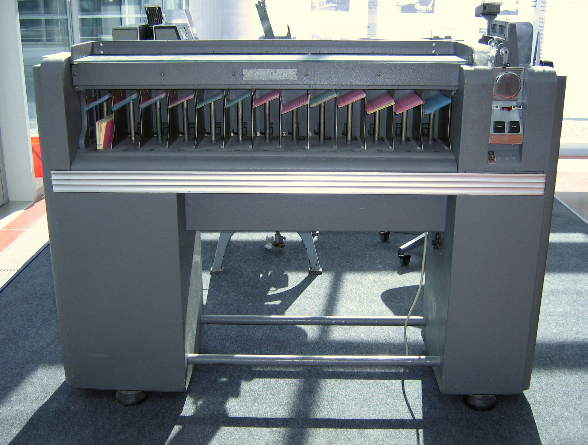

What actually stops an application
Of 153 refused postings, 79 died on where the work is or when the shift runs. Facts printed on the posting itself. Not skills.
The record, 2026-09-08 to 2026-09-24
Rows written before the tracker carried reason codes keep their reason as prose, so their bucket is derived by keyword and marked as such. Thirty-nine resisted classification and are published unattributed rather than forced into a bucket. That is the whole argument for recording a code at the moment of the decision.
$ python -m pipeline report --tracker tracker.csv
Postings triaged: 189
Funnel
skipped 153 81%
applied 27 14%
needs_human 7 4%
rejected 2 1%
Proof coverage: 26/27 applications have an archived artifact
WARNING: an application without proof is not an applicationHow one posting is refused
Every filter runs. The chain does not stop at the first failure, so a posting blocked three ways reports all three. Hiding the rest would make the record cheaper to read and wrong.
Each refusal carries a sentence. A filter returns a code and a message, not a boolean. The code is what the counts are built from; the message is for a human reading the row six weeks later.
Nothing is resolved in my favour. A posting that never published its shift is not assumed to fit. It passes the filter and raises a flag, so a person confirms before applying.

Twenty-one postings from the record carry every field a filter needs, so they can be screened again. The other 168 cannot: the tracker never stored their shift or their stack.
Change the candidate, not the chart
Every filter below is the one in the repository. Move a control and all twenty-one postings are screened again, with the cost of the trade named in words.
What stopsme lying
| Constraint | Why it exists | Enforced by | Checks |
|---|---|---|---|
| Two implementations, one oracle | The page would otherwise drift from the engine it claims to be | CI screens the fixtures in Python and JavaScript and compares verdict, code and message | 60 |
| The gate fails, it never fixes | A validator that quietly repairs a CV teaches nothing about the generator | No write path, plus a test asserting the input is byte-identical afterwards | 12 |
| No application without proof | An audit found rows marked applied whose confirmation was never archived | The tracker raises at write time unless the proof file exists | 15 |
| A field that cannot be recovered keeps its posting out | Guessing a shift to make the page interactive is the fabrication the gate exists to stop | The engine's verdict must match the posting's real outcome | 9 |
| No personal data in the repository | Company names and contact details are not what makes the record useful | A CI job greps the tree for document, postal-code and phone patterns | 1 |
$ python scripts/gen_parity_expected.py
wrote 60 decisions to tests/fixtures/parity_expected.json
$ git diff --exit-code tests/fixtures/parity_expected.json
$ node --test "web/tests/*.test.mjs"
ok 1 - the JS port agrees with the Python oracle on every case
ok 4 - an unpublished shift is a flag, never a silent pass
# pass 18
# fail 0$ python -m pipeline validate --cv tailored.txt
TRUTH GATE
[PASS] 1. text extraction
[FAIL] 2. contained in master 11 orphan line(s)
[FAIL] 3. no unsupported claims invented percentage metric
[FAIL] 5. only confirmed skills ['go', 'rust', 'oracle']
RESULT: REJECTED (8/12 checks passed)
$ echo $?
1Seventy-eight tests in all, run on Python 3.11, 3.12 and 3.13 at every push. The figures on this page are computed in the browser from the published record; none is written into the markup.